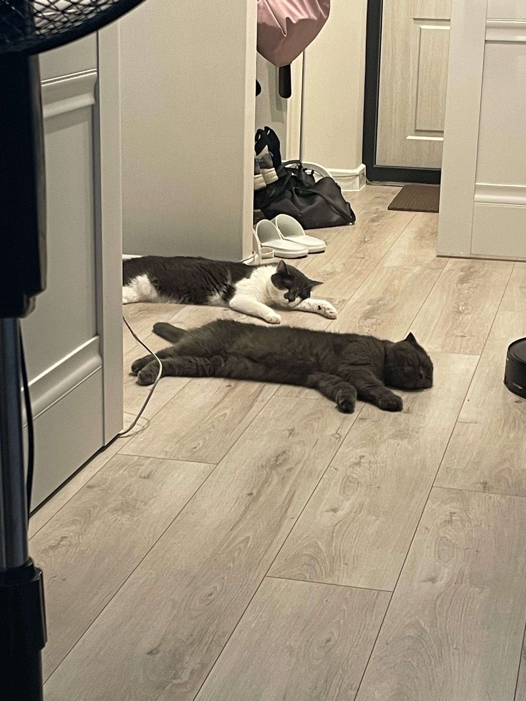
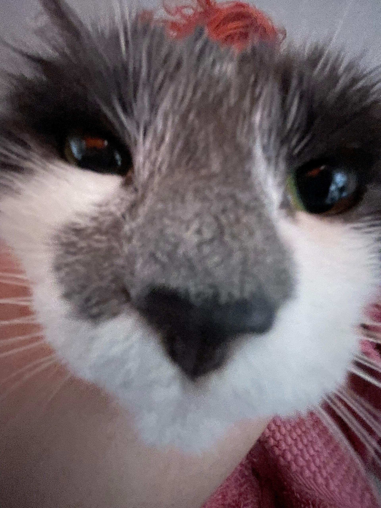
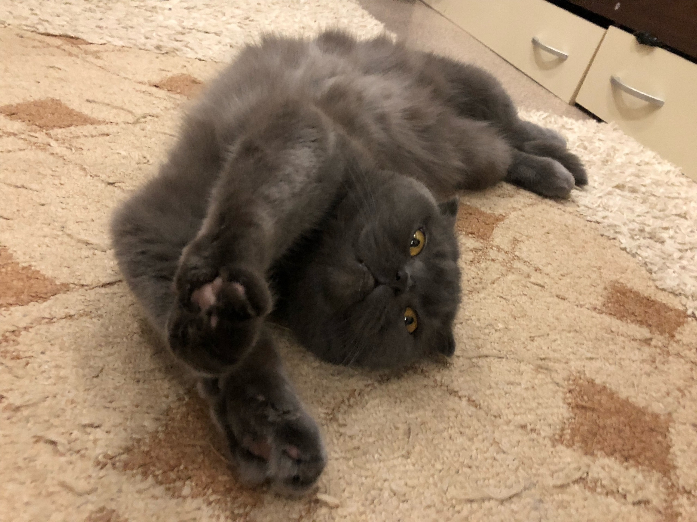
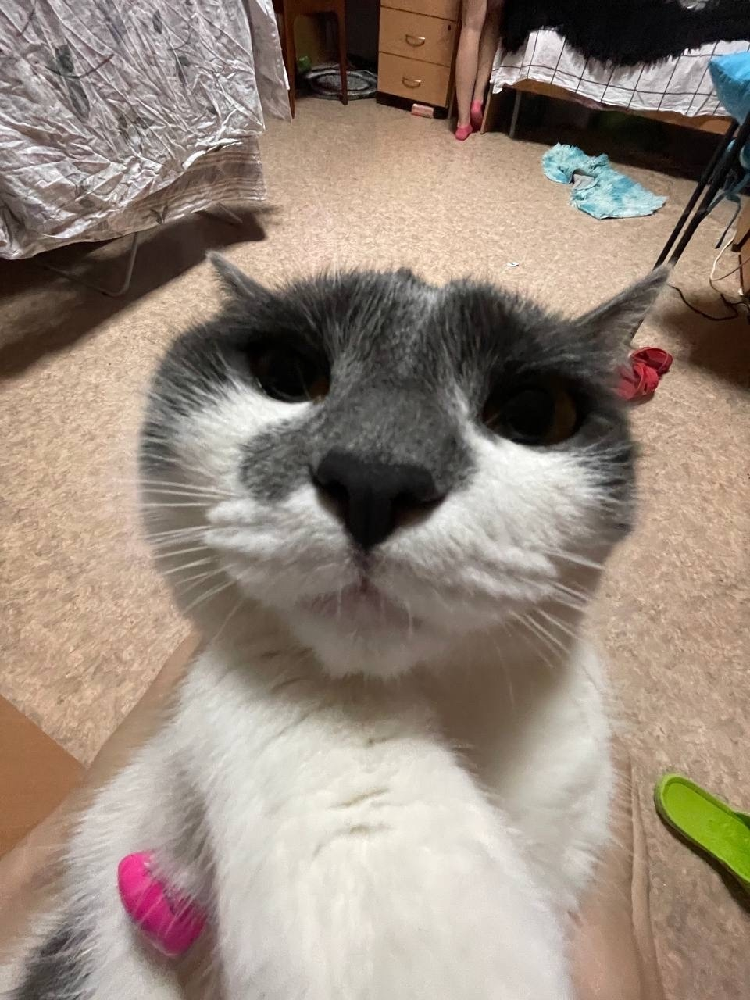
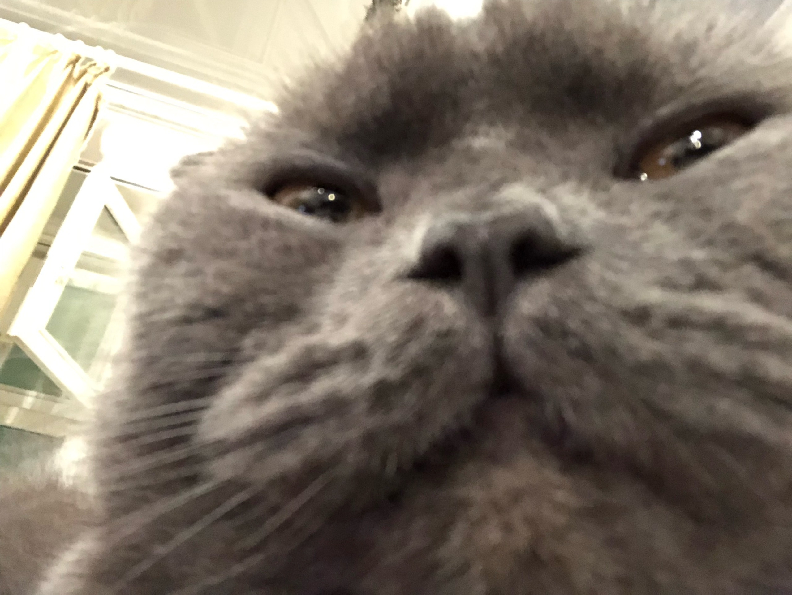
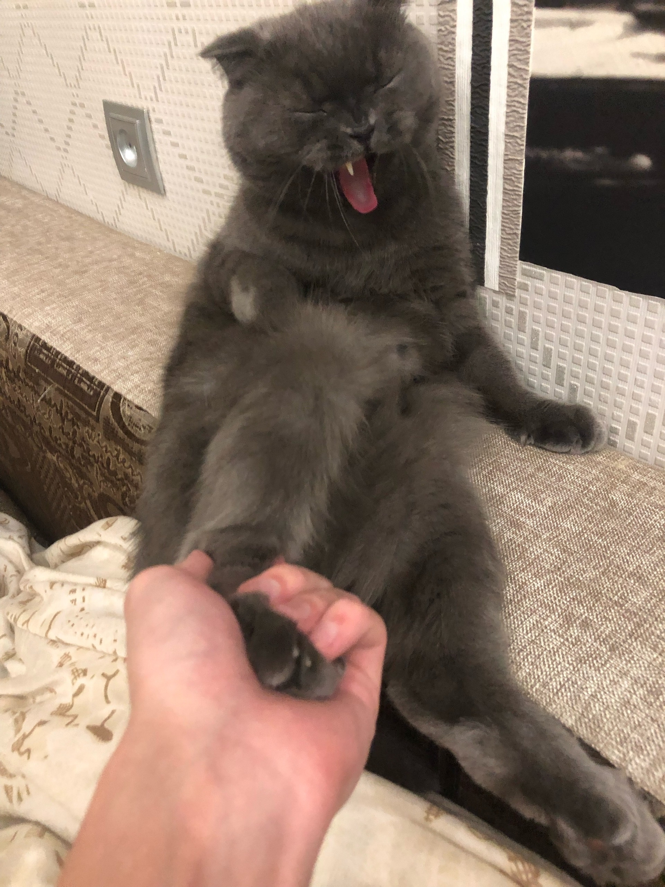
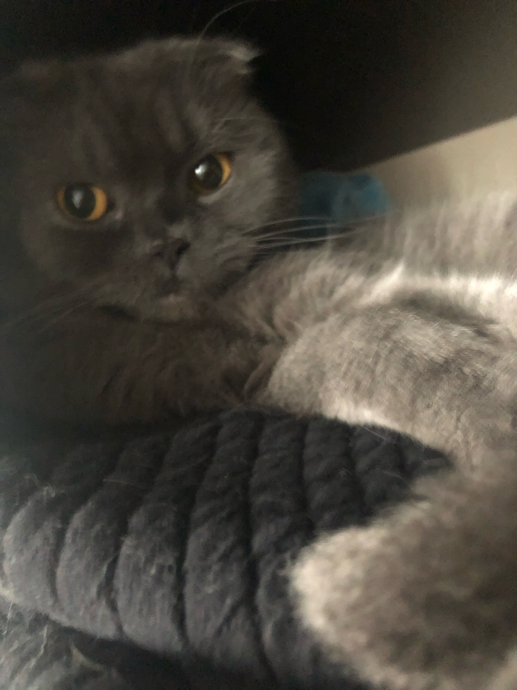

Фритрек и нулевой спринт: Подготовка к работе

</HTML>Это было самое начало пути. На этом этапе важно было проникнуться основами и настроиться на учёбу. И, возможно, подумать, как новые знания могут повлиять на ваше будущее.
В начале я был очень воодушевлён и переполнен мотивацией, так как я 5 лет мечтал начать учиться программированию. Я с большой радостью и любопытством читал каждый урок, уже визуализируя, каким крутым програмистом я стану, так как считал, что я быстро всё усваиваю. В качестве фотографий будут мои любимые коты, потому что они идеально отображают моё внутреннее состояние.
1 спринт: Я — чистый лист

</HTML>На первых этапах мы работали со страхами и сомнениями, которые часто испытывают новички. Один из них — страх перед чистым листом. Это, конечно же, намного сложнее, чем боязнь куска бумаги. Часто за этим ощущением скрываются более глубокие вопросы: с чего начать? а вдруг будет слишком сложно? что, если я не справлюсь?
Вот тут я столкнулся с осознанием того, что я не так уж и быстро всё усваиваю. Но я всё равно верил, что всё будет хорошо, а дальше будет легче (ведь моё мышление поменяется с гуманитарного на человеческое). Поэтому всё с тем же любопытсвом и азартом старался понять каждую тему.
1 спринт: А если не получится?

</HTML>Первый проект — позади! Но это всё ещё самое начало пути. Радость могла быстро померкнуть и смениться ожиданием провала. Или вы, наоборот, могли вдохновиться успехами и поверить в себя.
Было намного тяжелее, чем я себе это представлял. Написание и защита диплома в юридическом мне дались проще, чем первый проект. Было ощущение, что я и не учил ничего, а просто мимо проходил и решил страничку, вот, сверстать от скуки. А пересмотр готового кейса загнал меня в такой тильт, ведь у меня всё было не так понятно и просто, как у специалиста (я не знаю, с чего я взял, что должно было быть легко). Но с божьей помощью мне удалось успешно его закрыть. Честно, чувствовал себя королём.
2 спринт: Погоня за идеалом

</HTML>На этом этапе вы уже достаточно разбирались в основах вёрстки, чтобы понять, как много ещё впереди. Вы могли попытаться погнаться за идеалом и понять, что он недостижим. А, может, вы вовсе и не подвержены перфекционизму и вместо того, чтобы сделать идеально, старались просто сделать.
Второй спринт у меня начался с ещё большим стрессом, так как нужно было всё усвоить и сдать проект в 3 раза быстрее. Несмотря на это, в спринт я влился также с любопытсвом, пускай и не с таким большим (страх "не успеть" перетягивал одеяло на себя). На 1 мысль о том, что я молодец, приходилось 2-3 о том, что я не успеваю, и я вообще безответственно подошёл к обучению (вероятно, так и было).
2 спринт: О тех, кто рядом
Всё это время вы были не одиноки (хотя, возможно, иногда и чувствовали, что одни против целого мира). Вас окружали одногруппники, команда сопровождения и просто близкие люди, которым можно пожаловаться, если очередной макет просто так не поддавался. Осваивать что-то новое легче, когда рядом есть единомышленники, не правда ли?
Каждую минуту, когда я не спал и не работал, я думал о том, что я не успею. То ли из-за того, что стресс меня толкал вперёд и не давал спать, то ли из-за того, что сам спринт был полегче, у меня всё таки получилось. Да, пришлось 1-2 ночи не поспать, но оно того точно стоило. Лицо моей кошки идеально передаёт моё внутреннее и внешнее состояние на тот момент. Но ничего, дальше точно будет легче, ведь я развиваюсь.
3 спринт: Обходные стратегии

</HTML>На этом курсе вы постоянно решали разные задачи. В какой-то момент вам могло показаться, что решения просто иссякли. Значит, пришло время посмотреть на задачу под другим углом.
Начало третьего спринта... Легче не стало. К нему я подошёл уже всерьёз и с небольшим недоверием (смотреть фото). Этот спринт забрал мою душу. Взамен он дал мне многое: бессонные ночи, апатия, выгорание. Каждая тема для меня была как отдельный спринт. Начали появляться мысли, что я вообще зря сюда полез. И, что неудивительно, конечно же, я не укладываюсь в сроки. Но с таким я уже сталкивался, как-нибудь да решу всё.
3 спринт: Когда опускаются руки

</HTML>Во время учёбы часто возникает чувство, когда не знаешь, за что хвататься. Вроде и проектную пора сдавать, и задачи хочется порешать, и в теории получше разобраться, и жизнь не забыть пожить. В такие моменты очень нужна концентрация. Вспомните, откуда вы её черпали.
Решил. Но радости нет, так как у меня настолько мало времени для перехода к следующему спринту и его выполнению, что я просто пошёл дальше. Фото моего кота могло бы отлично всё описать и без слов. Ну, сложнее быть уже не может, я ведь начал всё понимать немножко. Верим.
«Сейчас я здесь»

</HTML>Сейчас вы уже очень много знаете о вёрстке. Но это только начало. Во-первых, впереди ещё много материала про «красотищу». Во-вторых, с окончанием курса учёба не заканчивается. Вёрстка — это целый мир. И этот мир постоянно меняется. Познать его полностью не получится, но это тот случай, когда важен сам процесс познания. Ведь часто путь — и есть результат.
Мне кажется, что я какой-то не такой. Особенный или необучаемый? Не знаю. Любопытсво и мотивация стали сдавать позиции, теперь мне просто страшно. Определённо больший вклад во всём этом стоит за плохим распределением времени и безответственным стартом. Сейчас я поработал над ошибками и должен почти без отставания закончить этот спринт и перейти к следующему. Да, я не до конца что-то усвоил, некоторые вещи при перечитывании для меня вообще оказываются сюрпризами. Возможно, 3 предыдущих спринта не дали мне достаточную базу для того, чтобы я чувствовал себя уверенно и проходил следующие спринты уже с большей лёгкостью. Но они определённо мне дали возможность поработать над дисциплиной. Благодаря этому дальше точно всё будет лучше. Но всё ещё страшно.